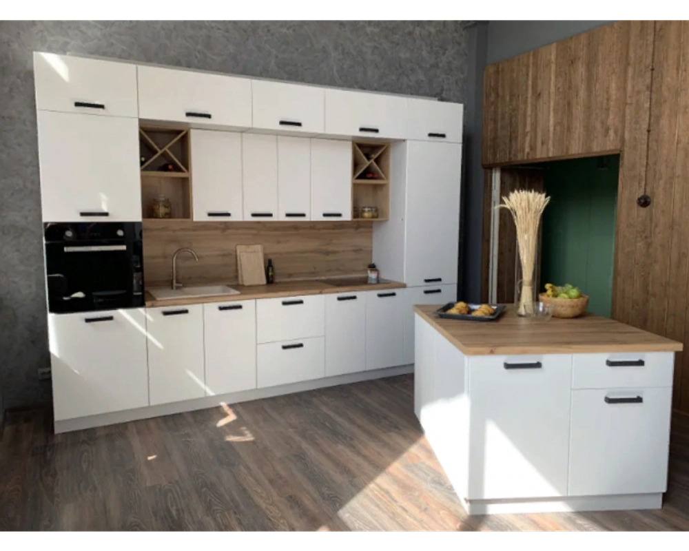

-21%

Кухня Ройс 3400 Белый софт
До конца акции осталось:
00д
00ч
00мин
110900.00 руб
140900.00 руб
Описание
Кухонный гарнитур «Ройс» — это сочетание минимализма и функциональности. Модульная система выполнена в стиле «хай-тек», что представляет собой полностью разгруженную рабочую и обеденную секцию. При создании отделки были использованы самые современные материалы.
Присутствие четких линий, правильных геометрических форм и пропорциональности позволяют максимально полезно и рационально использовать пространство в квартире.
Цвет:
Белый софт
Комплектация
Ройс ПН 600М:
Пенал с нишей
Ройс ПН 600М:
Пенал без ниши
Ройс СМ 800:
Шкаф нижний мойка - 2 шт
Ройс СК2 600:
Шкаф нижний комод 2 ящика
Ройс П 600:
Шкаф верхний
Ройс ГПГ 800:
Шкаф верхний горизонтальный - 5 шт
Ройс П 400:
Шкаф верхний - 2 шт
Винница ПЛВ 400:
Дуб Бунратти - 2 шт
Полка ПК 400:
Дуб Бунратти - 2 шт
Ройс СШ 1000:
Шкаф нижний с ящиком - 2 шт
Фасад торцевой С Ройс:
4 шт
Материалы
Корпус:
ЛДСП 16 мм Серый
Фасад:
МДФ 16 мм, пленка ПВХ, стекло фотопечать 4 мм
Задняя стенка:
ХДФ 3 мм
Цоколь:
ЛДСП 16 мм серого цвета, высота 100 мм
Характеристики
Вес:
86,36 кг
Объем:
1,25 м³
Установка полок:
Металлические полкодержатели
Лицевая фурнитура:
Ручка металл со вставкой из АБС-пластика 96 мм
Цоколь
Цоколь крепится на регулируемую опору черного цвета из АБС-пластика при помощи клипсы. Опора регулируется от 100 до 115 мм.
Оттенки
Доступные оттенки:
Белый софт, Графит софт, Ваниль софт, Виноград софт, Грей софт, Зеленый софт, Лазурь софт, Персик софт, Черника софт, Нарцисс софт, Мрамор Арктик, Гранит Маус, Гранит Оникс, Гранит Грей, Оливково-зелёный, Вино софт, Серый эмалит, Маус софт